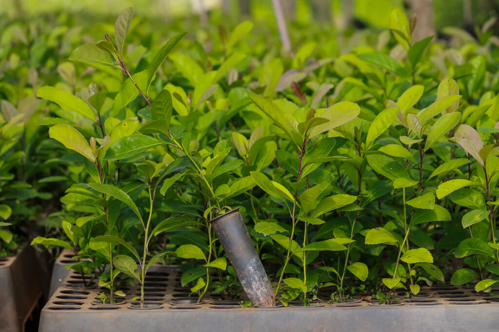
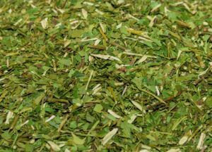
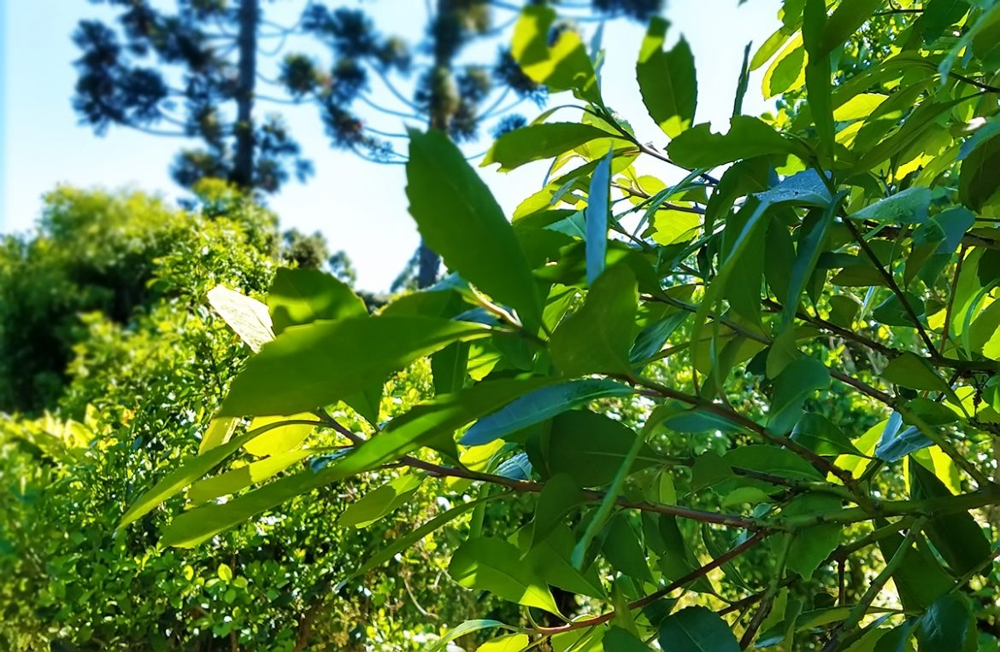
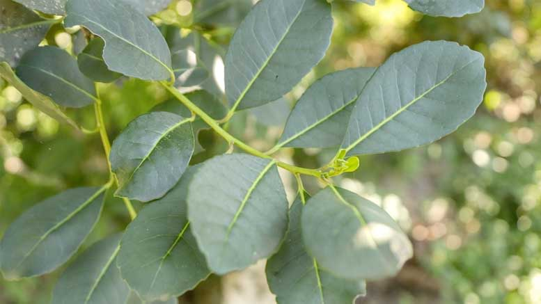

O quão importante a erva-mate é para a nossa economia.
A erva mate se tornou muito valiosa para o Paraná, trazendo lucro para o estado. Agora exportamos essa planta tão valiosa para vários países, como: Argentina, Uruguai, Alemanha, Estados Unidos, China, entre outros.
E com a erva também levamos um pouquinho da nossa cultura.
 iAssim podemos perceber que a erva-mate é o ouro verde do Paraná.
 